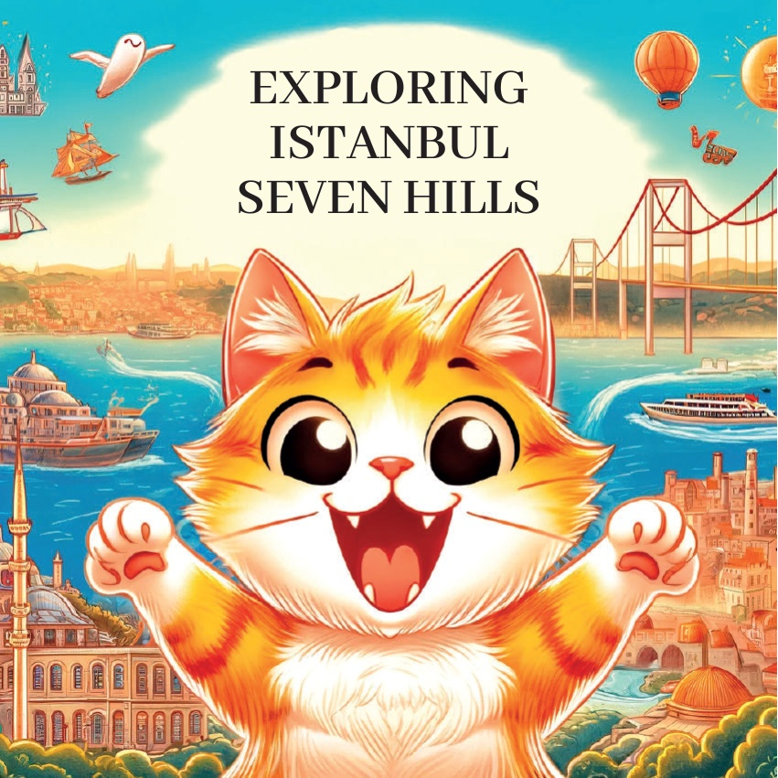
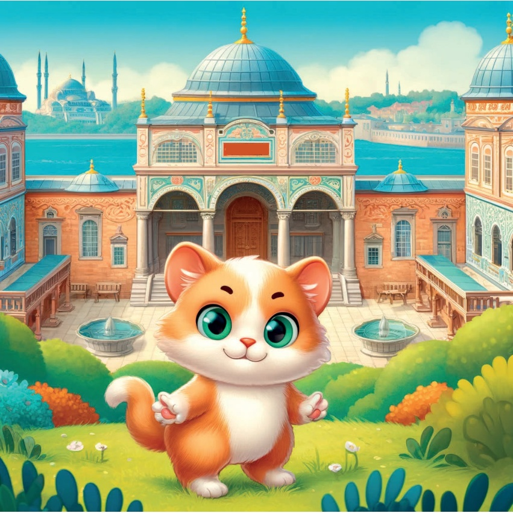
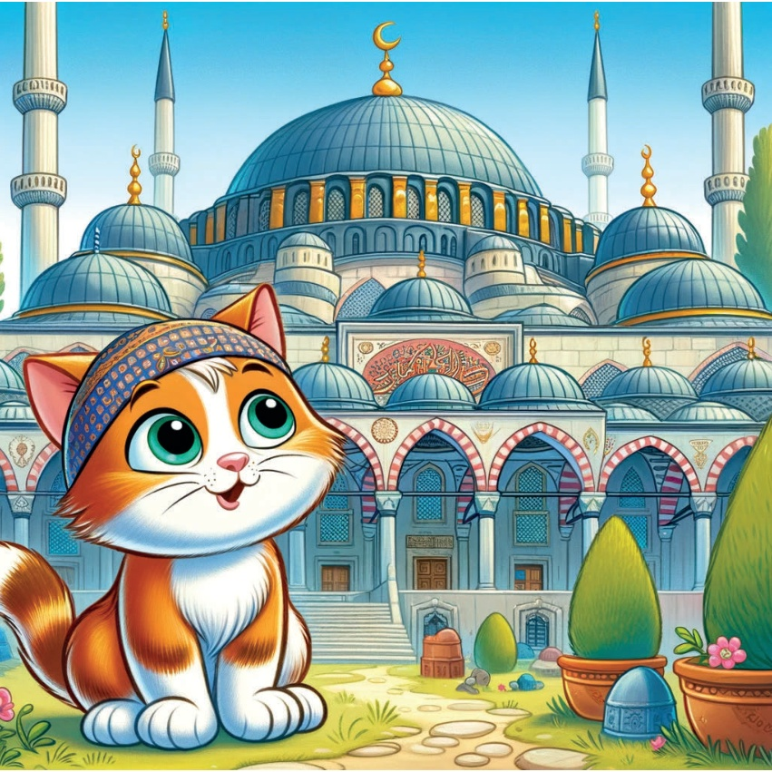
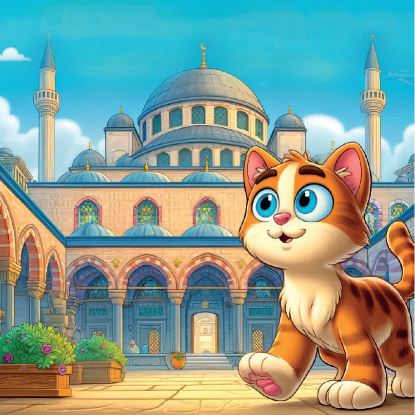
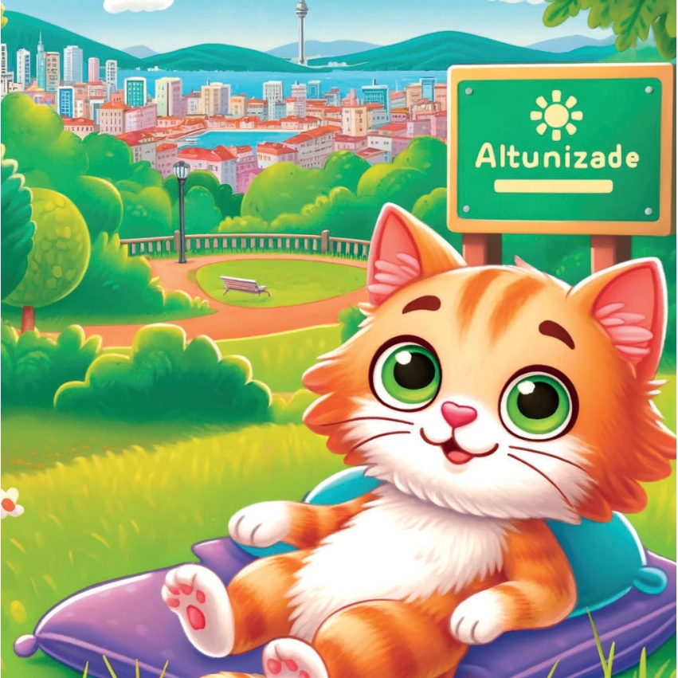
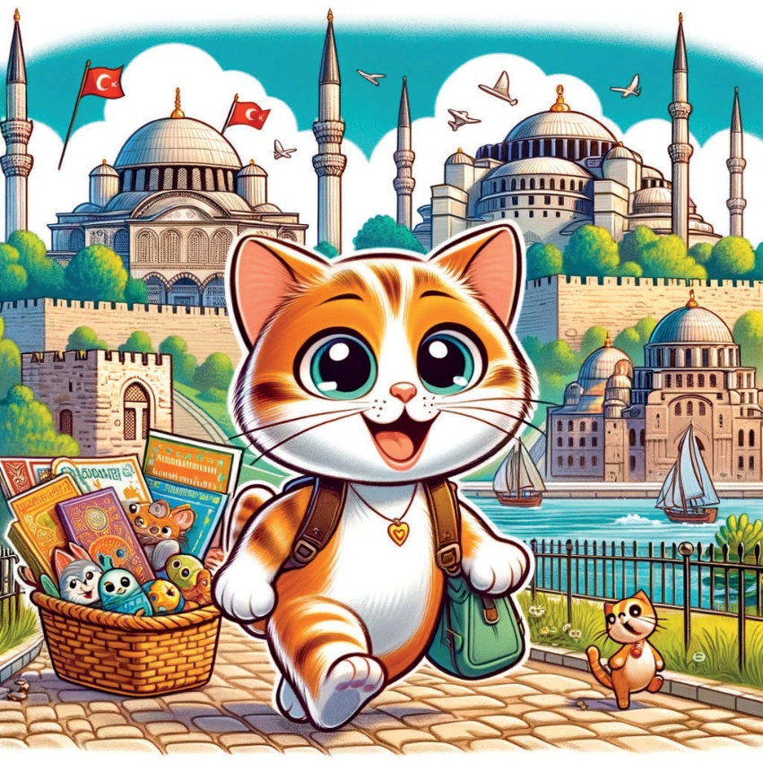
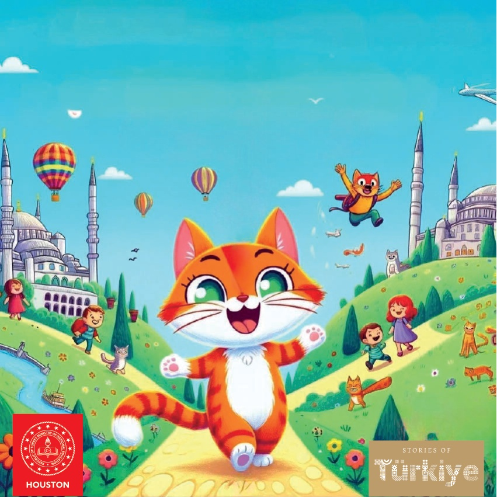

1

2

3
Bilo je jednom,
postojala je znatiželjna
malena mačka po imenu Karamel
koja je voljela istraživati različite gradove.
Jednog dana odlučila je otkrijti
slavnih sedam brda Istanbula kako bi naučila
o njihovoj jedinstvenoj povijesti i ljepoti.
4
5
Topkapı Palat
Karamelovo prvo mjesto boravka je bilo Seraglio Point,
gdje je s oduševljenjem promatrala veličanstvo
Topkapı Palaca.
Prekrasni vrtovi palaca i zadivljujući pogled na
Bospor je ostavili nju u zapanjenju.
6

7
Čemberlitaš
Zatim je Karamel posjetila Čemberlitaš,
poznat po Stupovima Konstantina.
Divila se starom stupu koji se uzdiže
u prometnom području prepunom povijesti.
8
9
Süleymaniye džamija
Karamel je onda otputovala na treći breg, gdje se uzdiže veličanstvena Süleymaniye džamija.
Zavučena je moćnim kupolama džamije i mirnim dvorištem.
10

11
Džamija Fatih
U srcu Istanbula,
Karamel je posjetila Džamiju Fatih
na četvrtom brdu.
Impresivna arhitektura
i mirno okruženje
njenom su donijeli osjećaj opuštanja.
12

13
Dženova sljedeća stanica bio je peti brd, gdje je descoperila
meškit Yavuz Sultan Selim.
Lokacija mešquita pružala je zadivljujući pogled na Zlatni zaliv.
14
15
Mihrimah Sultan džamija
Na šestom brdu, Karamel je našla
džamiju Mihrimah Sultan.
Prekrasan dizajn džamije
i živopisna okolina oko nje
je očarala nju.
16
17
Altunizade
Karamelova zadnja stanica je sedmi brd,
Altunizade. Uživao je u zelenim parkovima
i prekrasnim pogledima, čineći ga savršenim
zaključkom njenog avanturizma.
18

19
Srdce punu novih iskustava i uspomena, Karamel je shvatila koliko su posebnih Istanbulova sedam brda. Povratila se kući, sanjajući o svom sljedećem avanturama.
20

21

22